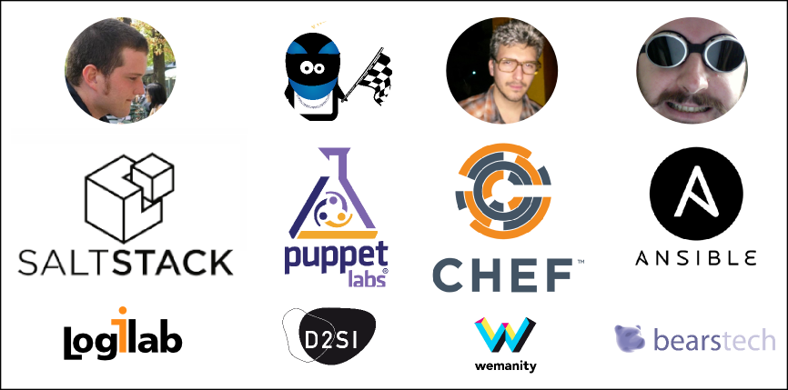

Comme annoncé sur ce blog, le meetup de juin était un peu particulier. Nous avons rassemblé plusieurs frameworks pour discuter comparativement des technologies similaires à Salt. Nous sommes ressortis avec une idée plus précise des forces et faiblesses de chacun, mais aussi des idées pour améliorer Salt.
Voici les diapositives utilisées pour introduire la soirée.
Merci à Mathieu de Bearstech, Guilhem de Wemanity, Francois de D2SI et Arthur de Logilab pour leurs interventions.
Nous avons abordé 8 grandes thématiques :
- Introduction intervenants et leurs entreprises
- Introduction générale par projet, historique, key features, langages de programmation, DSLs, installation multiplateforme (linux, unix, windows, mac, etc. ?)
- Déploiement de configuration et templating
- Exécutions de commandes, organisation des noeuds, machines, ciblage
- Architecture (réseau, parefeux, bus de communication, protocoles)
- Extensibilité, plugins, écriture et déploiement
- Orchestration, gestion de resources élastiques (cloud)
- Délégation, collaboration, environnements (dev, preprod, prod), approche Devops
- Composants "sur étagère", taille de la communauté, utilisateurs notables
- Offres "entreprise" autour ou écosystème commercial, Logique open-source / open-core, formations, livres
Le meetup était visionnable en direct en streaming sur Dailymotion et un montage de l'enregistrement a été publié par École42 :
CONF@42 - MeetUp Salt par 42Born2Code
Nous avons fini la soirée autour de pizzas et boissons offertes par Logilab.
Lors de l'organisation (sur le pad notamment), plusieurs personnes ont montré un intérêt pour ce type de débat, notamment dans d'autres villes que Paris (Lyon, Rennes, Nantes), n'hésitez pas à nous en parler sur la liste de discussion pour qu'on réitère l'expérience.
Go Top